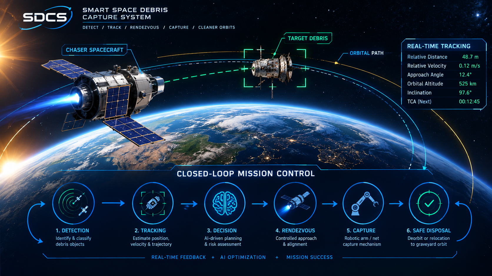

01
Observe
Acquire environmental and target observations from the simulated orbital environment and maintain the information required for subsequent target assessment.
Sensing / Detection / ObservationA closed-loop mission architecture for monitoring, assessing, approaching and capturing selected orbital debris within a controlled low-Earth-orbit simulation.
The system combines orbital surveillance, target detection, state estimation, collision-risk assessment, autonomous decision logic, relative navigation and controlled capture into a traceable mission workflow.
Acquire environmental and target observations from the simulated orbital environment and maintain the information required for subsequent target assessment.
Sensing / Detection / ObservationConvert observations into a usable estimate of relative position, relative velocity, motion state, object characteristics and associated uncertainty.
State Estimation / Relative NavigationEvaluate target geometry, relative motion, collision conditions and mission constraints before an action is considered executable.
Risk Assessment / Constraint EvaluationSelect the applicable mission response and execute only the corresponding controlled sequence, followed by renewed observation and state assessment.
Decision Logic / Guidance / CaptureThe conceptual architecture separates sensing from estimation, estimation from assessment, authorization from action, and action from the next measurement. This creates a traceable operational loop suitable for simulation, analysis and later verification activities.
Collect environmental and target observations.
Determine the current relative state and uncertainty model.
Evaluate geometry, motion and operational constraints.
Select hold, abort or the applicable capture sequence.
Perform the commanded model action and close the loop.
The system operates around a servicer spacecraft that maintains awareness of nearby debris, identifies a candidate target, determines the relative state and evaluates whether the target can safely enter the capture sequence.
The graphical model represents the relationship between the spacecraft, tracked objects, orbital paths, target assessment and relative-navigation information used by the mission logic.

The system boundary is organized around mission functions rather than isolated software screens. Each capability contributes a defined role in the operational chain.
Identify debris objects within the modeled surveillance environment and extract the measurements required for target characterization.
Maintain a continuously updated representation of candidate objects as their simulated orbital states evolve with time.
Determine relative position and velocity information needed to characterize the chaser–target encounter geometry.
Evaluate relative geometry, approach conditions and operational limits before progressing through a controlled rendezvous and capture sequence.
Apply mission-state logic to determine whether the modeled system should hold, abort or proceed with the applicable capture mode.
Represent the controlled robotic capture, debris transfer and containment sequence while preserving the spacecraft and mission state for continued operation.
Orbital environment, debris observations and target measurements.
Object identification and track maintenance within the modeled surveillance region.
Relative position, velocity, geometry and target-state representation.
Evaluate risk, constraints and applicable mission response.
Manage relative motion toward the selected target under defined approach constraints.
Execute the modeled capture mechanism and transfer the object into the containment path.
Each dashboard page serves a distinct engineering purpose. The pages are intentionally separated so that mission definition, operations, orbital awareness and simulation remain individually traceable.
Defines the mission concept of operations and the complete operational sequence.
Presents the operational monitoring environment and mission-state information used during simulated execution.
Provides the orbital representation of the modeled spacecraft and monitored debris environment.
The project simulation provides a software representation of the mission architecture. It is intended to demonstrate system behavior, state transitions, orbital relationships and capture logic rather than certify flight hardware or operational flight software.
| Mission identifier | ADCS-01 |
| Operational environment | Low Earth Orbit |
| Spacecraft dry mass | 500 kg |
| Modeled storage capacity | 60 kg |
| Monitored object model | Multi-object |
| Mission architecture | Closed-loop |
| Primary output | Capture / Containment State |